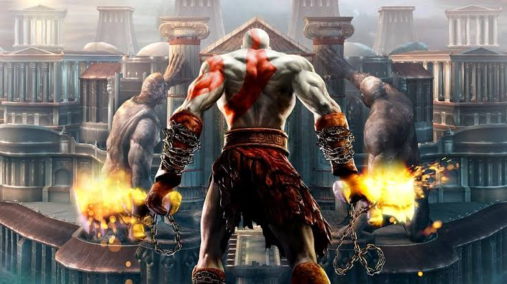
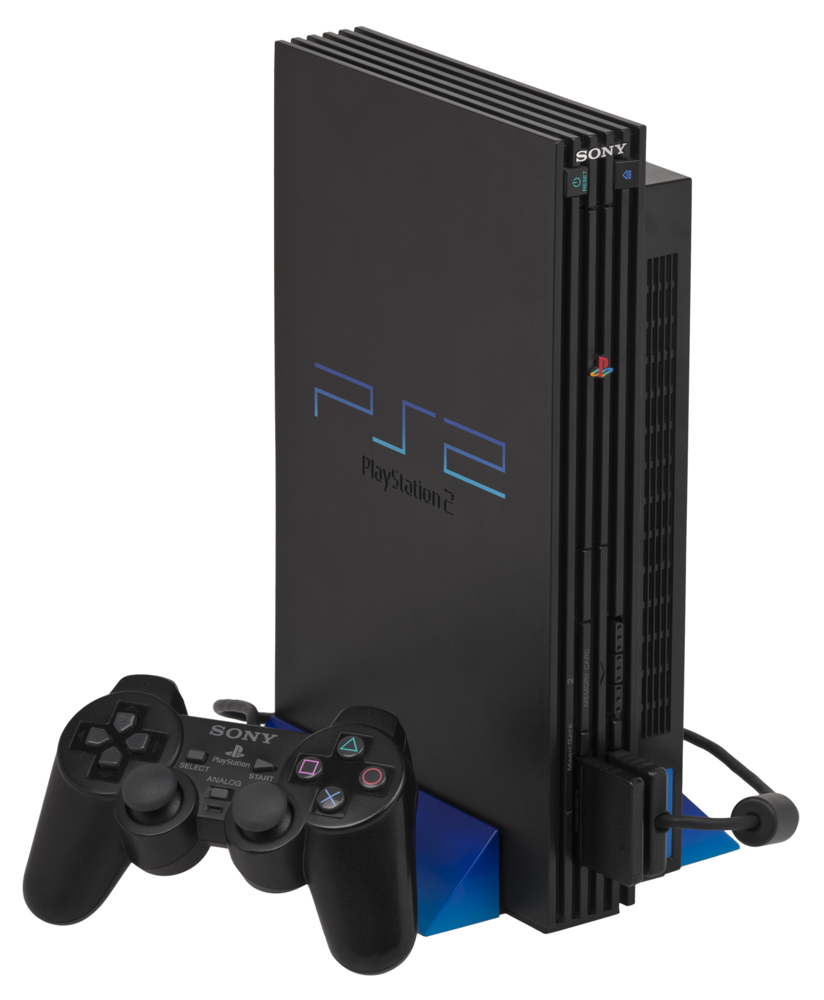
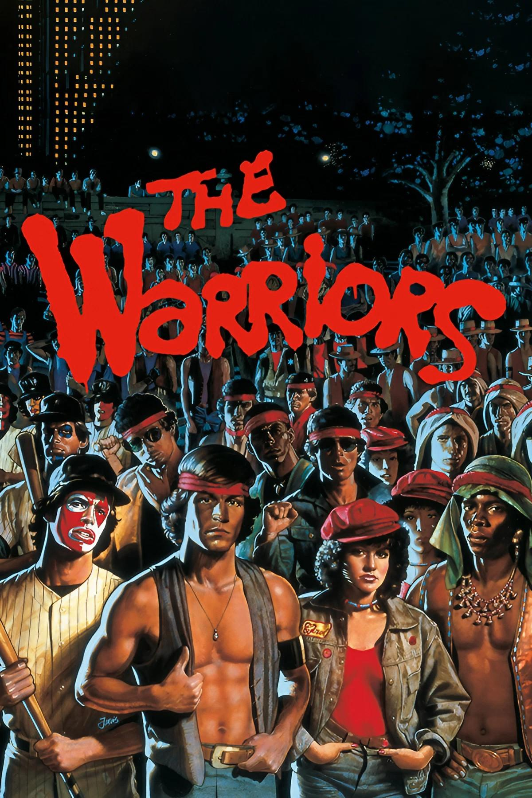

Ação e aventura
God of War I e II
Uma jornada cheia de batalhas e mitologia.
Uma das minhas lembranças é jogar God of War com meu pai(drasto). Adorava passar horas jogando com ele!
CAPÍTULO 01 / PLAYSTATION 2
Uma viagem pelos jogos que fizeram parte da minha história. Aqui reúno os títulos, as lembranças e os momentos que tornaram o PS2 especial para mim.
Explorar meus jogos ↓
ARQUIVO DE MEMÓRIAS / PS2
Meus primeiros jogos e as lembranças que guardo deles.

Uma jornada cheia de batalhas e mitologia.
Uma das minhas lembranças é jogar God of War com meu pai(drasto). Adorava passar horas jogando com ele!

Uma gangue luta para sobreviver e voltar para casa em uma Nova York dominada por gangues rivais.
The Warriors foi um dos jogos que mais me marcou no PS2. Gostava de explorar as ruas de Nova York e participar das brigas de gangues.
Nenhum jogo encontrado. Tente outra busca.
FIM DO CAPÍTULO 01